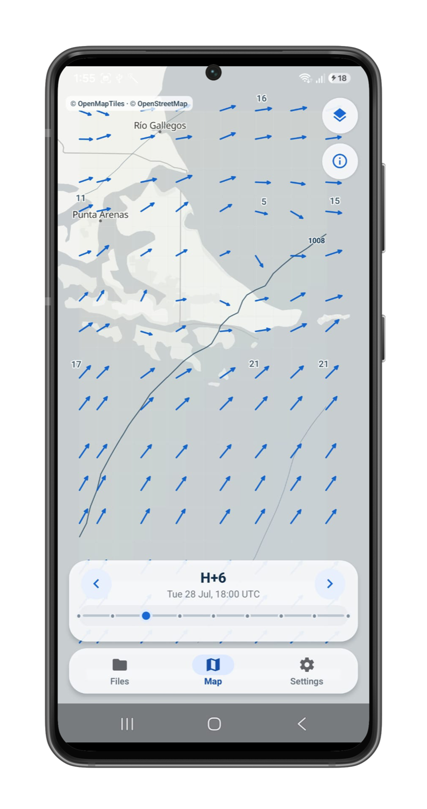
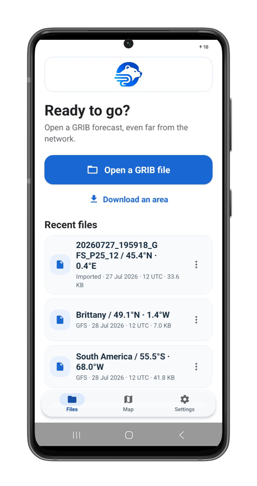

Fast
Open a GRIB and reach the weather in seconds.
Open local GRIB weather and keep pressure and wind available offline. No account. No ads. Everything stays on your device.

Open a GRIB and reach the weather in seconds.
Downloaded forecasts remain useful without a network.
Built for a phone from the start, not adapted from desktop.
A direct mobile workflow for opening, downloading and inspecting GRIB weather.
Open, rename and revisit local forecasts without an account.

Move through H+0 to H+24 and inspect pressure and 10 m wind at any point.
Gribzy is still in active development. We are looking for people who already use GRIB files in the real world. Test it outside, tell us what feels unclear and help us make the essentials dependable.
Join the Android betaFree beta · Android · Application required